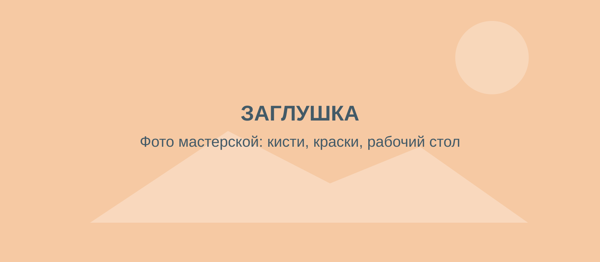
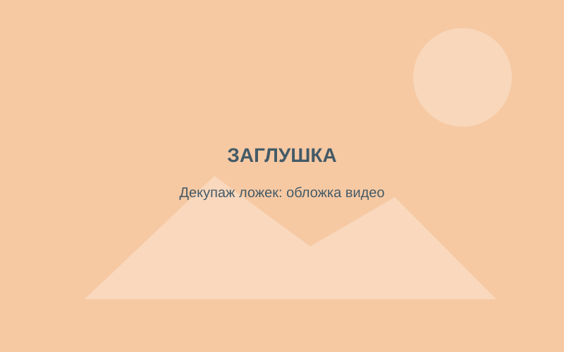
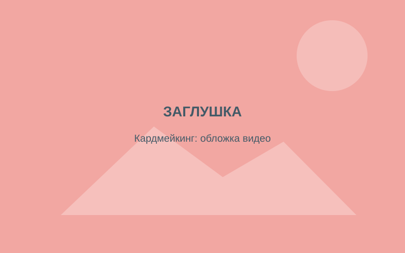
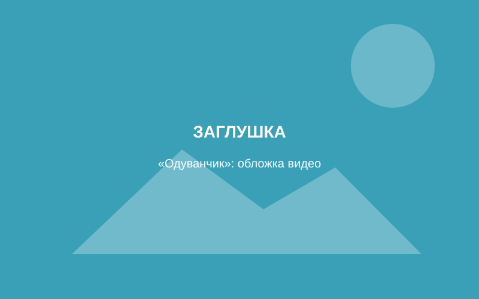
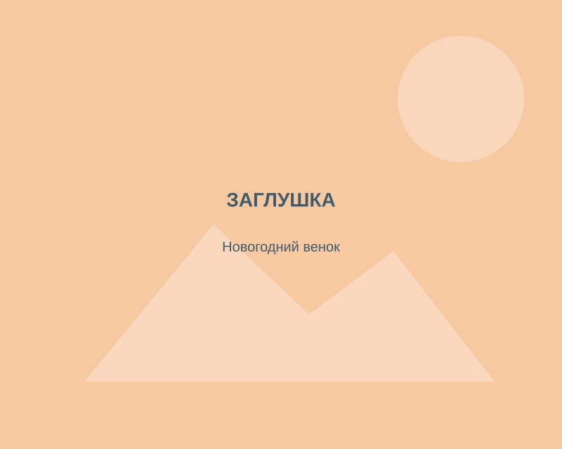
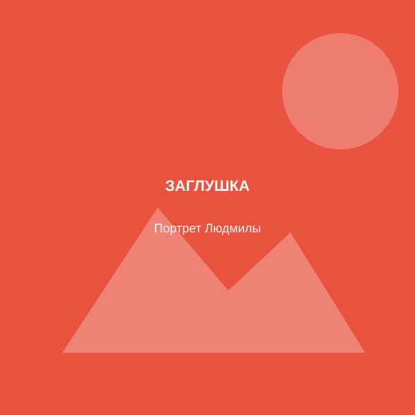

Вместе, но из дома
- Занятие в прямом эфире, можно задать вопрос
- Список материалов заранее
- Подходит для любого города
Стоимость: [указать]
Смотреть расписаниеМастер-классы по рукоделию для детей и взрослых: онлайн, вживую, в записи или по инструкции с картинками. Делаю декор и подарки на заказ.

Выберите формат, который подходит по времени и месту. Программа и внимание к результату одинаковые.
Стоимость: [указать]
Смотреть расписаниеСтоимость: [указать]
Обсудить датуСтоимость: [указать]
Выбрать урокСтоимость: [указать]
Выбрать инструкциюПечатная инструкция, QR-код на видеоурок и материалы для работы. Открыл, навёл камеру на код и начал. Хороший подарок ребёнку или подруге.




Занятия, после которых ребёнок уносит домой свою вещь, а не только впечатления.
Выбрать занятие →Мастер-класс на день рождения, девичник или семейную встречу. Материалы: [уточнить, чьи]
Обсудить праздник →Тематические программы к памятным датам, регулярный кружок для детского сада или досугового центра, корпоративные праздники.
Запросить программу →Готовые работы, декор на заказ, а ещё видеоурок или инструкция, которые можно подарить.
Смотреть работы →Новогодний и свадебный декор, открытки, куклы, валяные птицы. Часть работ можно купить готовыми, похожую можно заказать: по вашему цвету, размеру и поводу.

Меня зовут Людмила. Я хозяйка этой творческой мастерской: создаю мастер-классы для детей и взрослых, а ещё творю для души и на заказ.
По образованию я библиотекарь. Много лет работала в детских и юношеских библиотеках, больше 7 лет веду мастер-классы, последние 5 лет — ещё и онлайн. Отзывы детей, родителей и клиентов помогли мне набраться смелости, уйти с работы и открыть своё дело.
[Текст реального отзыва родителя: что делали, что понравилось ребёнку]
[Отзыв взрослого участника онлайн-занятия]
[Отзыв заказчика работы: что заказывал, к какому поводу]
Одним глазком тут можно подглядеть за волшебством
 1/4
1/49 октября в библиотеке на Плеханова прошёл урок памяти, посвящённый подвигу подольских курсантов. Школьникам рассказали о молодых ребятах немногим старше них, ценой своих жизней задержавших врага на подступах к Москве. После того как войска Красной армии попали в Вяземский котёл, на передовую были брошены курсанты военных училищ.
Читать полностью 1/9
1/9Сегодня в нашей библиотеке прошла встреча со школьниками, посвящённая Дню защитника Отечества. Ребятам рассказали историю праздника и предложили почувствовать себя новобранцами: они отвечали на вопросы викторины о военной форме, учились наматывать портянки, складывали пилотки из газеты и пришивали пуговицы.
Читать полностью 2/8
2/814 февраля исполнилось 170 лет В. М. Гаршину. Мы подготовили литературно-игровую программу «Всеволод Гаршин и его сказки». Ребята вспомнили героев писателя, отправились в путешествие по дорогам сказок, ответили на вопросы викторины, а в завершение сложили из бумаги лягушку-попрыгушку.
Читать полностьюНапишите, для кого занятие и сколько будет человек. Подберу мастер-класс и формат, отвечу на вопросы о материалах.